1. Lépés - Plafon
A projektnek ez a legkomplexebb eleme, úgyhogy kezdjük ezzel! Először hozzunk létre egy rácsot amire később építkezhetünk! Szeretnénk, hogy ez mindig igazodjon a méretekhez.
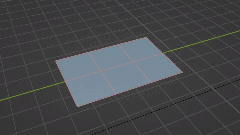
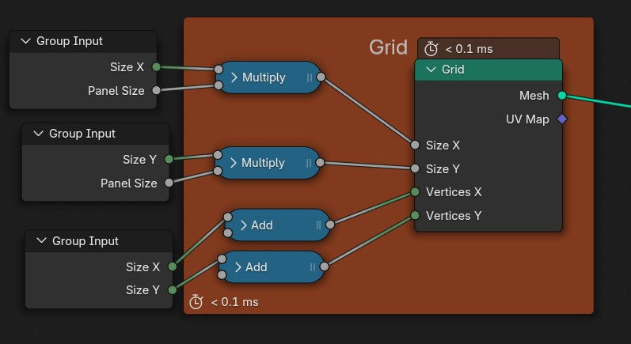
Az ehhez hasonló nagyobb projekteket úgy a legkönnyebb megoldani, ha felbontjuk kisebb megvalósítható részekre és végül ezeket a kisebb részeket össze kombináljuk. Láthatjuk majd, hogy részekre bontva sokkal egyszerűbb less az egész és előre elkészített elemeket fogunk használni, hogy ezzel is időt spóroljunk
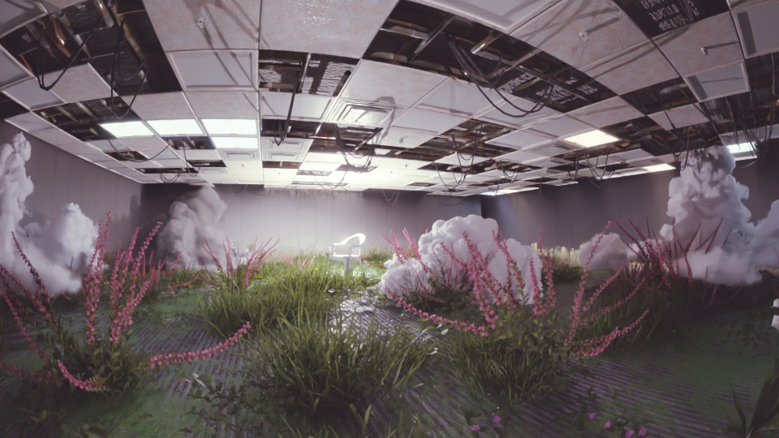
A projektnek ez a legkomplexebb eleme, úgyhogy kezdjük ezzel! Először hozzunk létre egy rácsot amire később építkezhetünk! Szeretnénk, hogy ez mindig igazodjon a méretekhez.


Az elkészült rácsot belevezetjük egy Node Csoportba (Node kijelölése + CTRL+G) mivel több helyen is fel akarjuk használni és el szeretnénk kerülni az átláthatatlanságot.
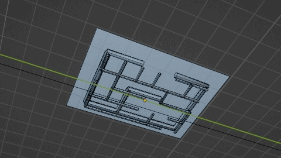
![Blender Geometry Nodes setup showing a node group with three main sections: Roof at the top, Pipes in the middle, and a final Join Geometry node leading to Group Output. In the Roof section, two 'Adjust to panel size' nodes take 'Size X', 'Panel Size', and 'Cord' inputs from 'Group Input' and connect to the 'Grid' node's 'Size X' and 'Size Y'. The 'Grid' node connects to a 'MoveUp' node, which connects to a 'Set Material' node labeled 'Concrete'. This outputs to 'Join Geometry'. The Pipes section has two labeled groups: Upper and Lower. In Upper, a 'Group Input' provides 'Mesh' to a 'MazeFromGrid' node, outputting 'Curves' to a 'Move Up' node and then to 'Curve to Mesh', which also takes input from a 'Curve Circle' node with Radius 0.15m. The resulting mesh goes to a 'Set Material' node labeled 'Pipe2' and into 'Join Geometry'. In Lower, another 'Group Input' passes 'Mesh' to a 'Subdivide Mesh' node, which feeds into 'MazeFromGrid'. Its curves connect to a 'Move Up' and then 'Curve to Mesh', with profile input from another 'Curve Circle' with 0.07m radius. This connects to a 'Set Material' node labeled 'Pipe1', which also feeds into 'Join Geometry'. 'Join Geometry' outputs to 'Group Output' as final geometry.](../media/iroda/Tető.jpg)
Arra, hogy a csövek labirintusszerűen hálózzák, be a plafonunkat egy külön Node Csoportot fogunk használni. A rácsot átalakítjuk Görbévé amin megkereshetjük az 1. ponthoz legközelebb eső másik pontot, ez önmagában nem néz ki jól, ezért randomizáljuk az egyes utak “relatív hosszát”, ezzel minden út más és más lesz. Ezután már csak adnunk kell a Görbénknek egy Alakot és feljebb mozgatni azt. Ugyanezt megismételjük és máris létrehoztunk egy komplex rendszert
![Blender Geometry Nodes setup for generating curves from edge paths. The 'Group Input' provides a 'Mesh' input to the 'Edge Paths to Curves' node. This node outputs 'Curves' to the 'Group Output'. The 'Shortest Edge Paths' node provides 'Next Vertex Index' to the 'Edge Paths to Curves' node. A 'Random Value' node generates a float value between 0.000 and 1.000 with Seed 39 and outputs to 'Edge Cost' on 'Shortest Edge Paths'. The 'Index' node outputs an index value to input A of an 'Equal' comparison node, where B is set to 0. The result of the 'Equal' node connects to 'Start Vertices' on 'Edge Paths to Curves'. The 'Index' node also connects to input A of the 'Equal' node.](../media/iroda/Labirintus.jpg)
Egy újabb rácsot hozunk létre, de most nem kell foglalkoznunk azzal, mennyi csúcspontunk van. A méreteket viszont a majd használandó panelek mméretéhez kell igazítanunk, hogy a plafonunk befedje az egész csőhálózatot. Mozgassuk a csövek fölé a tetőnket és az elkészült elemeket kombináljuk
![A Blender Geometry Nodes setup displays a material node tree. The 'Texture Coordinate' node's 'Object' output is connected to the 'Vector' input of a 'Mapping' node. The 'Vector' output of the 'Mapping' node feeds into the 'Vector' input of an 'Image Texture' node named 'BoxPipe.jpg.001'. The 'Color' and 'Alpha' outputs of the 'Image Texture' node are connected to the 'Base Color' and 'Alpha' inputs, respectively, of a 'Principled BSDF' node. Finally, the 'Principled BSDF' node's 'BSDF' output connects to the 'Surface' input of the 'Material Output' node.](../media/iroda/CsőAnyag.jpg)
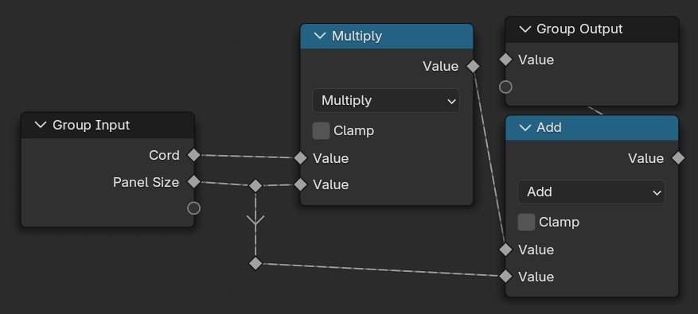
Modellezzünk pár egyszerű csempét és alkalmazzunk ezeken is kép Textúrákat. Ezeket helyezzük el egy Kollekcióban (Kijelölés + CTRL+M). Ez nem csak azért hasznos, hogy átláthatóbb legyen a projekt, de fel is tudjuk használni a plafonunk megvalósításában. Példányosítsuk a Kollekciónkat a Rácsunkon. Fontos, hogy a megfelelő Kollekciót válasszuk és pipáljuk is be a felkínált opciókat, a nemkívánatos viselkedés elkerülése érdekében. Bonyolultabb indexelésre nincs szükség, hisz a következő lépésben törölni fogunk párat
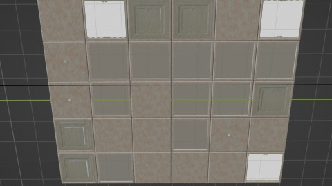
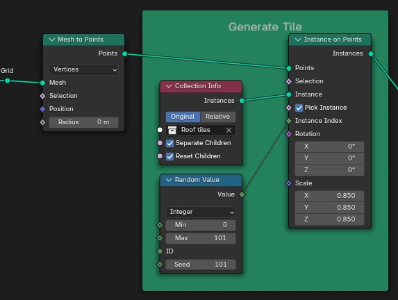
Hogy tényleg elhagyatott hatást adjunk az irodánknak véletlenszerűen válasszunk ki csempéket. Az egyik felét megtartjuk a másikat pedig majd arra használjuk, hogy a lógó kábeleket elhelyezzük a lukak helyén
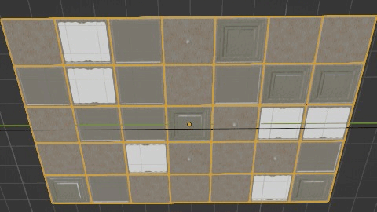
![The image shows a node-based interface, likely from a 3D modeling or procedural generation software. The nodes and connections are as follows: 1. 'Separate Geometry' node with inputs: Selection, Inverted, Geometry (connected to an external source), Selection. 2. 'Holes' output from the 'Separate Geometry' node is connected to the input of another node labeled 'Holes'. 3. The 'Holes' node has inputs: Value (set to Boolean), Probability, Seed. 4. The output of the 'Holes' node is connected to another external source labeled 'Tiles'. 5. There is also a 'Group Input' node with outputs: Missing tiles, Missing Seed.](../media/iroda/Szétválasztás.jpg)
Ez a rész kissé trükkösebb. Bontsuk szét a lyukakat tartalmazó szálunkat 2 újabbra, ezúttal 50-50 arányban. Az egyik lesz a kábelek kezdő pontja a másik a végpontja. A kezdőpontokat úgy választjuk ki, hogy kis négyzeteket helyezünk el a lyukakba amiken Vonalakat Példányosítunk, ezek iránya nem igen számít mivel később módosítani fogjuk.
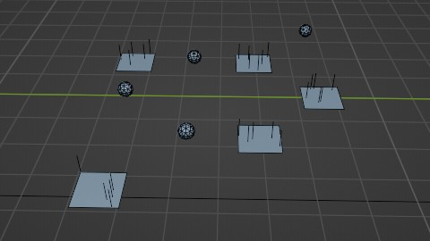
![A 'Group Input' node provides 'Cabel density' to both the 'Hanging Lines' and 'Cabel Position' branches. 'Hanging Lines' connects 'Group Input' to 'Realize Instances', which is connected to 'Distribute Points on Faces' and 'Instance on Points'. 'Instance on Points' uses a 'Curve Line' node to define the line shape. 'Cabel Position' connects 'Group Input' to 'Realize Instances', then to 'Instance on Points', using an 'Ico Sphere' node for the instances. 'Instance on Points' is further connected to 'Transform Geometry' and 'Geometry Proximity' nodes for positioning. A 'Holes In Half' section, using 'Separate Geometry' and a 'Random Value' node, is connected to both 'Hanging Lines' and 'Cabel Position', influencing the hole generation in the final geometry.](../media/iroda/Kábelek1.jpg)
A Geometry Proximity Node pont ezt a pozíciót adja meg ezért nekünk már csak rá kell állítani a Vonalakat amihez elég a Végpontokat kijelölni. Ezután a két végponton beállítjuk az ívet, enélkül a kábeleink teljesen egyenesek lennének. A véletlenszerű eltolás variációt ad az egésznek.
![Blender Geometry Nodes setup for creating curved lines. The setup uses several nodes connected by lines indicating data flow. 'Hanging Lines' and 'Cabel Position' nodes feed into a 'Set Position' node, which affects 'Geometry' and 'Selection'. A 'Set Spline Type' node selects 'Curve' as the spline type, influencing 'Selection'. 'Set Handle Type' is set to 'Curve'. Two 'Set Handle Positions' nodes control the curve's handle positions (left and right). A 'Random Value' node generates a random float value, influencing 'Z Offset' node. The 'Z Offset' node modifies the Z-coordinate, connecting to the 'Set Handle Positions' nodes. Finally, a 'Transform Geometry' node applies transformations (translation, rotation, and scale) to the resulting geometry. The 'Group Output' node outputs the final geometry.](../media/iroda/Kábelek2Javított.jpg)
Most hogy megvagyunk a fő alakkal díszítsük ki egy kicsit. Alkatítsuk át tényleges Alakká és adjunk hozzá részleteket. Ezek csak egyszerű cilinderek amiket a Vonal irányában elforgattunk és randomizáltuk a méretüket. A Z irányba ezt beszoroztuk ugyanazon Random Node-dal, csak más Seed-et használtunk
![A Geometry Nodes setup in Blender for generating cables. The node tree starts with the 'Group Input' node, which outputs a value called 'Cabel density'. This connects to the 'Cabel Curves' node, going into its 'Cabel density' input. The 'Cabel Curves' node outputs 'Geometry', which splits into two directions. One connection goes directly into the 'Input' of the 'Cabel Details' node, and from there its 'Geometry' output goes into the 'Join Geometry' node. The second connection from 'Cabel Curves' goes into the 'Geometry' input of the 'Set Material' node. Before reaching 'Set Material', this path passes through two more nodes: first, the 'Curve to Mesh' node, which takes the 'Cabel Curves' geometry as 'Curve' input and a circular shape from the 'Curve Circle' node as the 'Profile Curve'. The 'Curve Circle' node has parameters set to 32 points and a radius of 0.02 meters. The resulting mesh from 'Curve to Mesh' is passed to the 'Set Material' node. The 'Set Material' node applies a material named 'Cabels' and outputs geometry that is finally joined using the 'Join Geometry' node, which also receives input from the 'Cabel Details' node. Additional wires labeled 'Tiles' and 'Holes' connect from outside into the 'Cabel Curves' node.](../media/iroda/KábelekEgyütt.jpg)
![A Blender Geometry Nodes setup for detailing cables. The node tree begins with the 'Group Input' node, which outputs the input geometry. This goes into the 'Curve to Points' node, which takes the 'Curve' as input and generates points with a count set to 10. The points then pass through the 'Align Rotation to Vector' node, which aligns the rotation based on the Z axis with a factor of 1. The output then splits into two directions. One goes into the 'Instance on Points' node, where instances are created on the generated points. The 'Pick Instance' option is used, with rotation and scale applied from the previous nodes. The other split goes into the 'Set Material' node, applying the 'CabelDetail' material to the geometry before passing it to the 'Group Output' node. Another branch comes from the 'Random Value' node, which generates a Boolean value with a probability of 0.207 and a seed of 0, connecting to the 'Random Scale' node. This node produces a random scaling factor with a minimum value of 0.4 and a maximum value of 1.2. The scaling factor then connects to the 'Multiply' node, which is combined with a vector from the 'Combine XYZ' node to control the scaling along the X, Y, and Z axes. The final output is passed to the 'Instance on Points' node, where the geometry is instanced. The 'Cylinder' node generates a cylinder mesh with a radius of 0.05 meters and a depth of 0.2 meters, which is used as the instance for the 'Instance on Points' node.](../media/iroda/KábelExtra.jpg)
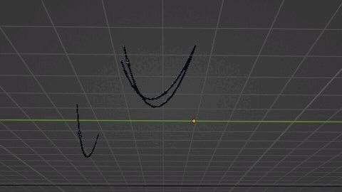
Mostmár csak össze kell kombinálnunk azt amit eddig készítettünk.
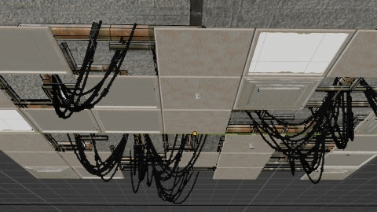
Szerencsénkre nem kell lemodelleznünk magunktól a növényeket, helyette haszálhatunk egy Előre Elkészített Csomagot , ez persze nem kötelező. A lépések kb ugyanazok mint a plafon csempéinél. Készítsünk egy lapot, aminek adtunk egy szőnyeg és fű textúrát amik közt zaj segítségével váltunk. Ezután adjuk, hozzá a Geometry Node csoportunkat és voilà.
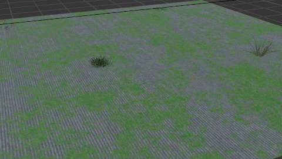
![The image shows a node-based interface, likely from a 3D modeling or procedural generation software. The nodes and connections are as follows: 1. 'Randomize' node connected to 'Barbarian Instance', 'Combine XYZ', and 'Barbarian Scale'. 2. 'To Flower Distribution' and 'To Grass Distribution' nodes connected to 'Random'. 3. 'Grass Distribution' node with inputs: Instances (1000), Position (Random Seed), Rotation (Random Seed), Scale (Random Seed). 4. 'Grass Input' node connected to 'Flower Density' and 'Flower Seed'. 5. 'Flower Distribution' node with inputs: Instances (1000), Position (Random Seed), Rotation (Random Seed), Scale (Random Seed). 6. 'Grass Vegetation' and 'Flower Vegetation' nodes connected to 'Crystal' and 'UV Set 1 Geometry'. 7. 'UV Set 1 Geometry' node connected to 'Join Geometry'. 8. 'Join Geometry' node connected to 'Viewport'. 9. 'Viewport' node connected to 'Business' and 'Surface'. 10. 'Surface' node connected to 'Ground'.](../media/iroda/VirágokÉsFű.jpg)
Az elkészült részeket felhasználva modellezzünk egy iroda helységet majd azt népesítsük be az Ingyenes Erőforrások részben említett tárgyakkal, hogy egyedibbé és szürreálisabbá tegyük az irodánkat elhelyeztünk pár ingyenes felhő modellt